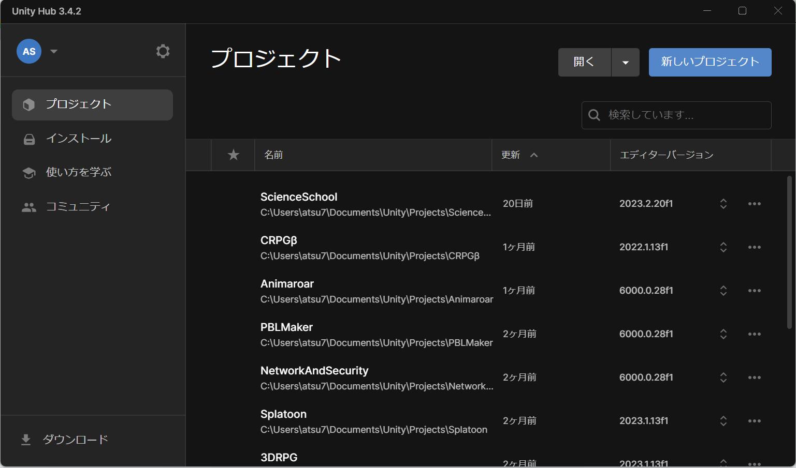
右上の「新しいプロジェクト」ボタンをクリックする
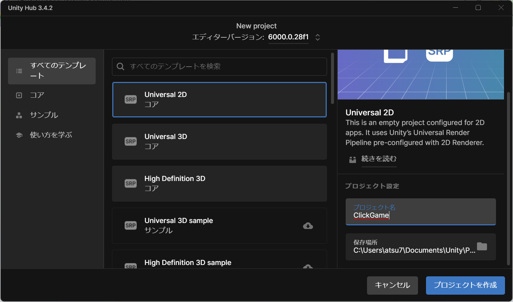
Universal2Dをクリック→プロジェクト名にClickGameと入力→保存場所を選ぶ→プロジェクトを作成をクリック
この操作はプロジェクトを新しく作るたびに行うので覚えると〇
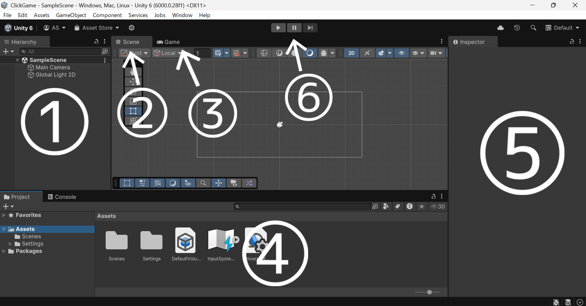
①ヒエラルキーウィンドウ：ゲーム内で使うカメラやオブジェクトなどが表示されているウィンドウ。つまり、ゲームの中にあるさまざまなパーツや要素を見やすく整理するためのもの。
②シーンビュー:ゲームの実際の画面を表示するウィンドウ。ゲームを作るためのパーツを配置したり、パーツを移動, 回転, 拡大したり、ゲームの中身を確認するためのもの。
③ゲームビュー:ゲームのカメラ視点で画面を確認するためのウィンドウ。実際に実行してゲームの動作を確認するだけでなく、UIを配置する時にも役立ちます。
④プロジェクトウィンドウ：ゲームに使う素材やパーツを管理するウィンドウ。
⑤インスペクターウィンドウ：ゲームのパーツの情報を編集するためのウィンドウ。パーツの位置、角度、大きさを数字で具体的に設定したり、パーツの色を変えたり、オブジェクトの動きを設定することができます。
⑥実行, 一時停止ボタン：ゲームを実際に実行するためのボタン、一時停止ボタンで実行中に一時停止ができます。
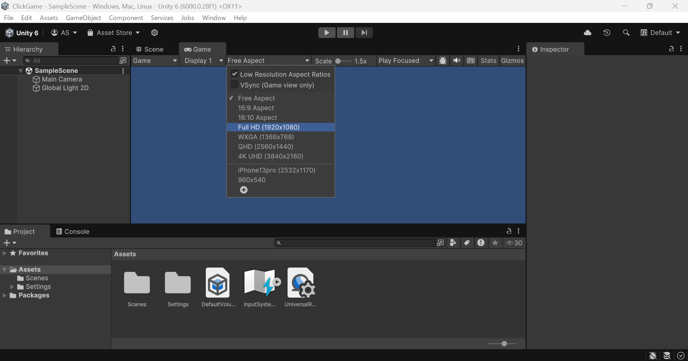
FreeAspectをクリック→FullHD(1920×1080)を選択
基本的にPCの画面は1920×1080の解像度が多いので、これを選択するとゲームの画面がきれいに表示されることが多いです。
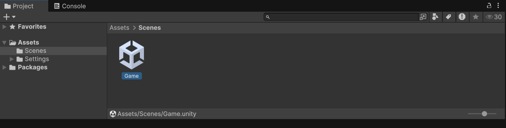
プロジェクトウィンドウでScenesフォルダをクリック→Sceneを右クリック→名前を変更→名前をGameに変更
シーンとはヒエラルキー、シーン、ゲームウィンドウをまとめたものでシーンを切り替えることでタイトル→ゲーム画面やゲームオーバー画面→タイトルなどを再現できます。
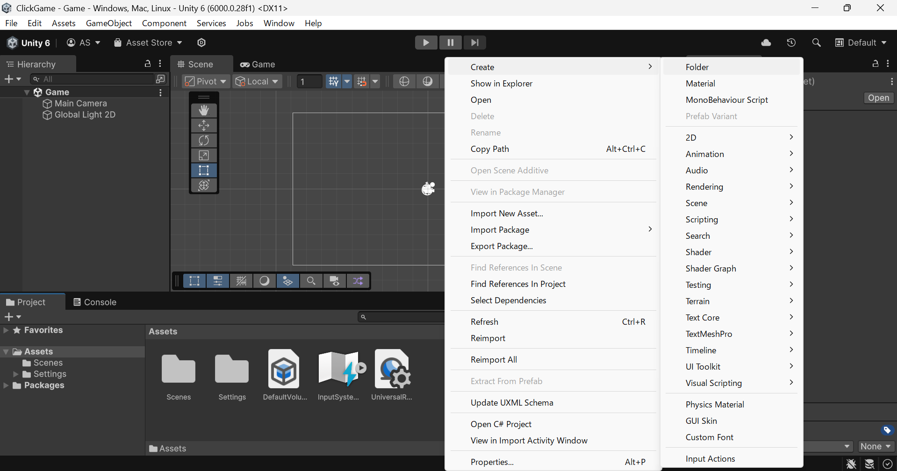
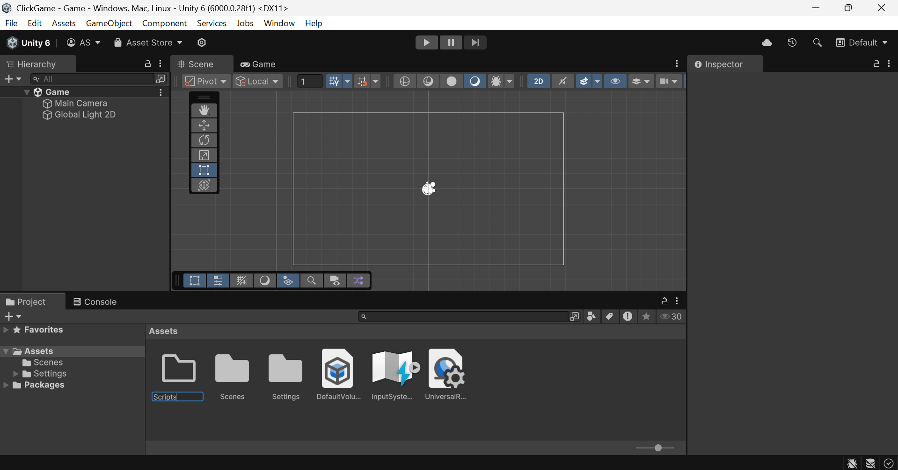
プロジェクトウィンドウで右クリック→Create→Folderをクリック→名前をScriptsに変更
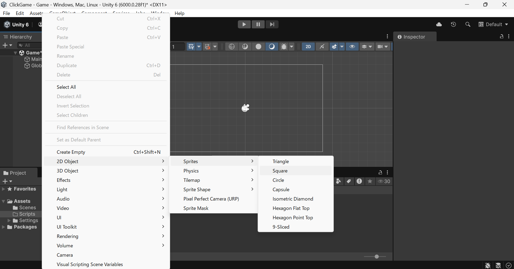
ヒエラルキーウィンドウで右クリック→2D Object→Sprites→Squareの順にクリック
真ん中に白い四角形が配置されればOKです。
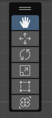
シーンビューの左上に上の画像のようなバーが出てきたと思います。
これはマウスの操作で何をするかを表します。上から順に
・シーンビューを移動: ドラッグするとシーンビューを移動できるようになります。
・オブジェクトの移動: ヒエラルキーウィンドウで選んだオブジェクトに矢印が出て、それをドラッグすることでオブジェクトの位置を移動できます。
・オブジェクトの回転: ヒエラルキーウィンドウで選んだオブジェクトに丸い円が出て、それをドラッグすることでオブジェクトを回転できます。
・オブジェクトの拡大縮小: ヒエラルキーウィンドウで選んだオブジェクトに四角いボックスが出て、それをドラッグすることでオブジェクトを拡大縮小できます。
・オブジェクトの移動と拡大縮小: ヒエラルキーウィンドウで選んだオブジェクトに四角いボックスが出て、上の2つを同時に行うことができます。
・万能: 上の全てができるようになります。間違えて違う操作をする可能性があるので使わないことが多いです。
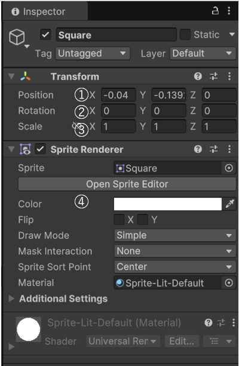
①座標: オブジェクトの位置を表す数字。左から順にx, y, zの座標が表示されていてこれを変えることでオブジェクトを正確な位置に配置できます。
②向き: オブジェクトの向きを表す数字。左から順にx, y, zの向きが表示されていてこれを変えることでオブジェクトを正確な向きに配置できます。
③大きさ: オブジェクトの大きさを表す数字。左から順にx, y, zの大きさが表示されていてこれを変えることでオブジェクトを正確な大きさに変えることができます。
④形と色: オブジェクトの形と色を変えることができます。Spriteに入っている画像が形、Colorの右のウィンドウが色です。
操作に慣れるまで好きな位置に色んな形のオブジェクトを置いてみてください
とうとう初めてのプログラミングです。最初は分からなくて当然だし、プログラミングに難しい印象を持つかもしれませんが、写したり自分で考えて何度も試行錯誤しているうちにちょっとずつ分かってくるので頑張っていきましょう！
プロジェクトウィンドウでScriptsを開いて右クリック→Create→MonobehaviourScriptをクリック→名前をBombに変更 の順に沿ってスクリプトを作成してください。
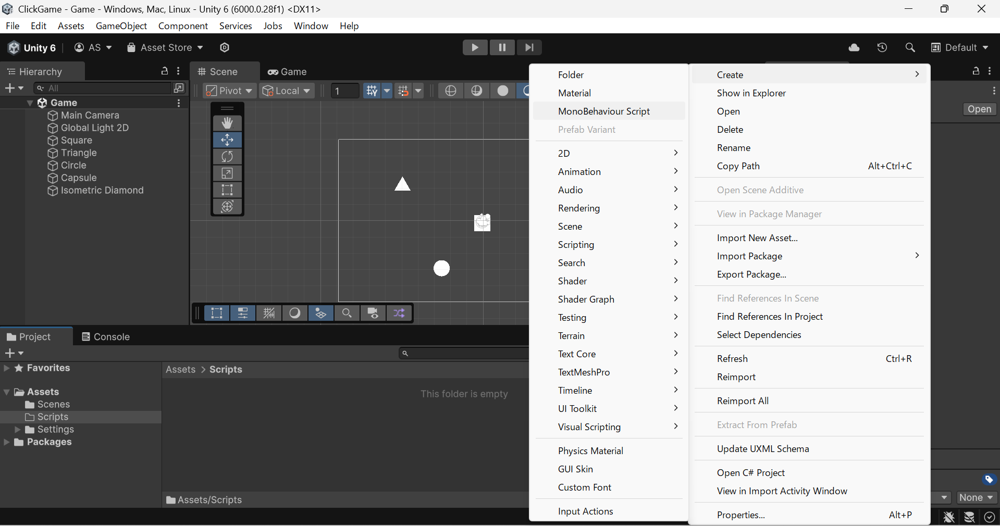
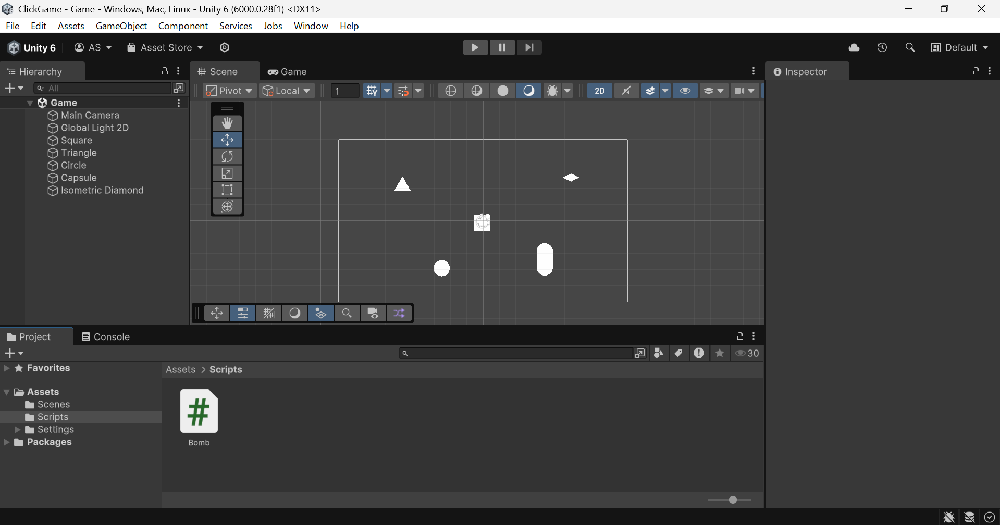
まずはGameManagerスクリプトをダブルクリックして開いてみましょう
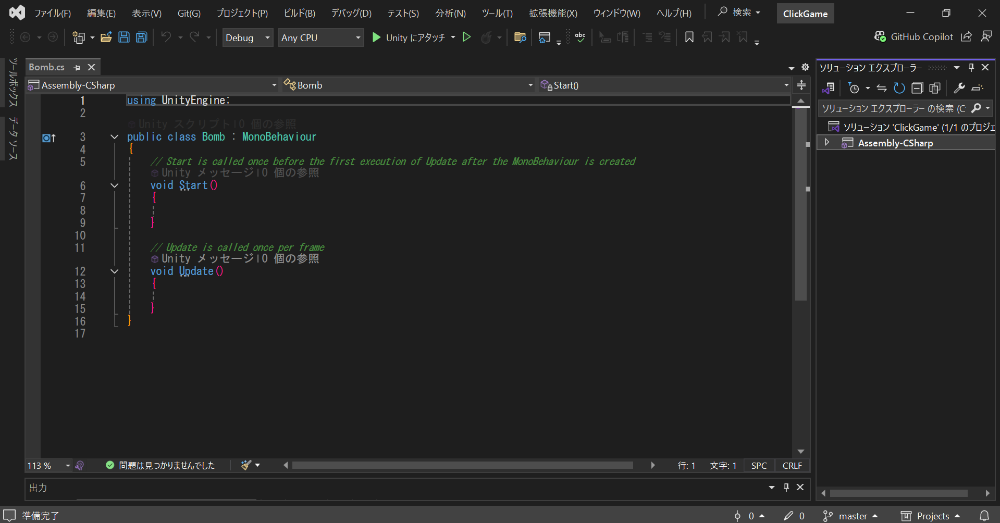
VisualStudioが開いて図のようなコードが書いてあればOKです。
確認出来たら、書いてあるコードを全て消して、以下のコードを書いてください。コピーもできます。
1using UnityEngine;
2using UnityEngine.UI;
3
4public class Bomb : MonoBehaviour
5{
6 [SerializeField, Header("「You Lose!」を表示するテキストボックス")]
7 private Text resultText;
8 private bool isFailed = false; // はずれなら true
9 private bool gameEnded = false; // 一度負けたら他のクリックを無効化
10
11 private void OnMouseDown()
12 {
13 if (gameEnded) return; // ゲームが終わっていたら何もしない
14
15 if (isFailed)
16 {
17 gameEnded = true;
18 resultText.text = "You Lose!"; // 負けメッセージを表示
19 }
20 else
21 {
22 Destroy(this.gameObject); // クリックされたらオブジェクトを消す
23 }
24 }
25}下図のようになればOKです。
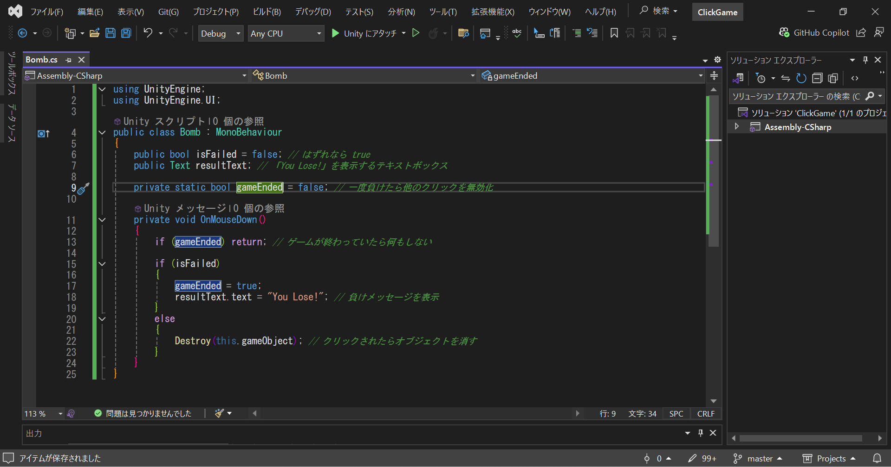
初めてのプログラミングは以上です！いかがでしたか？最後に解説もしているので見てくださいね！
UIとは?と思った人はホームに戻ってUnity辞典を確認してください。
まずはTextオブジェクトを作ります。
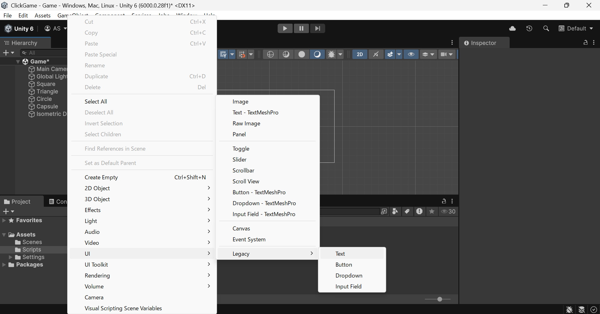
ヒエラルキーウィンドウで右クリック→UI→Legacy→Textの順にクリック
作ったTextオブジェクトの名前はLoseMessageにしてください。
次にTextオブジェクトを選択してインスペクターウィンドウの中にある「New Text」の文字を消し、座標を(0, 0, 0)にしてください
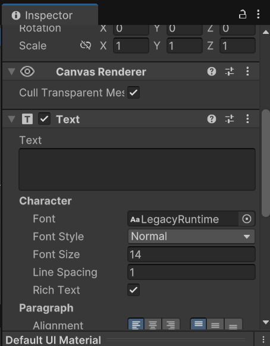
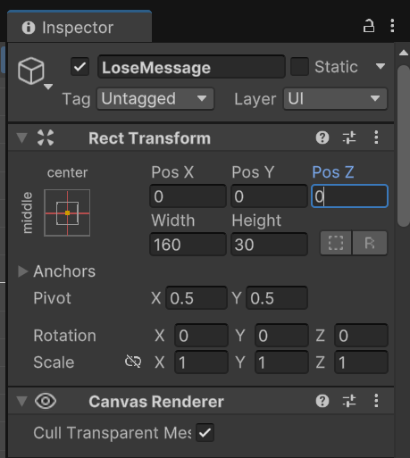
まずは最初に作った四角形をクリックしてインスペクターウィンドウのAddComponentをクリック。
でてきたウィンドウで「BoxCollider2D」と検索し、でてきたBoxCollider2Dを選択してください。
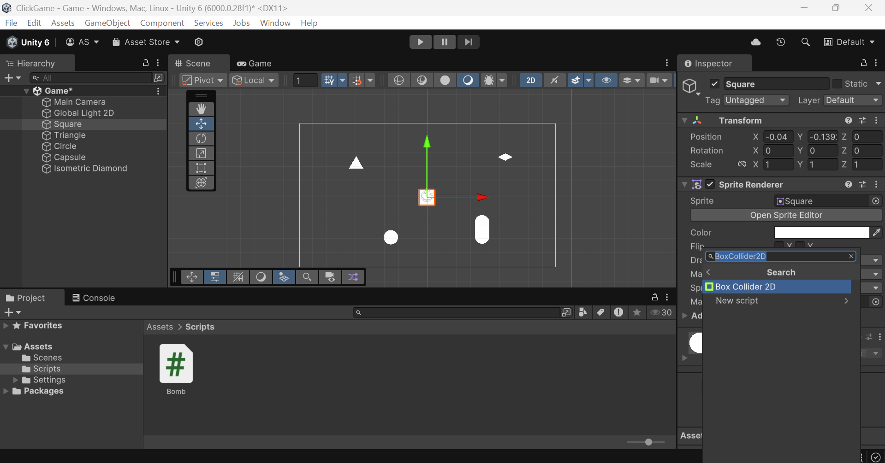
2Dが付いていないBoxColliderを間違えて選択していないか確認してください。
この資料を作っている私はかつてこのミスを見つけるのに1ヶ月くらいかかって地獄を見たことがあります。下図のようになればOKです。
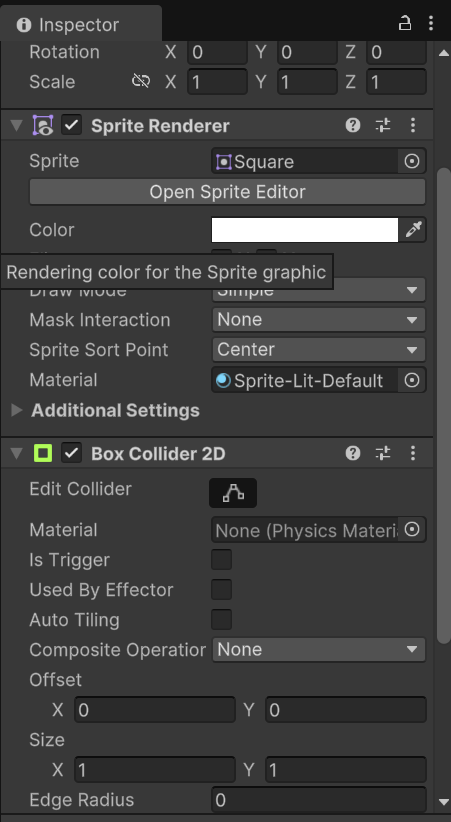
Colliderとは当たり判定のことで、オブジェクトにColliderをつけることで緑の枠の範囲に当たり判定を作ることができます。
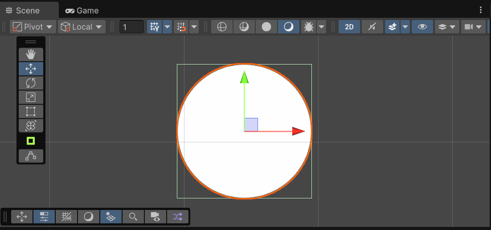
次にBombスクリプトをAddComponentに向かってドラッグアンドドロップしてください。
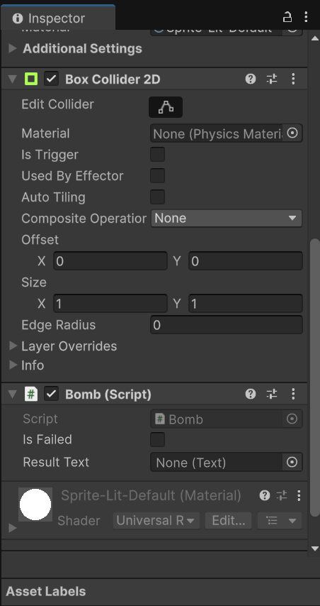
図のようになればOKです。
最後に、LoseMessageオブジェクトをアタッチされているBombクラスのResultTextに向かってドラッグアンドドロップしてください。
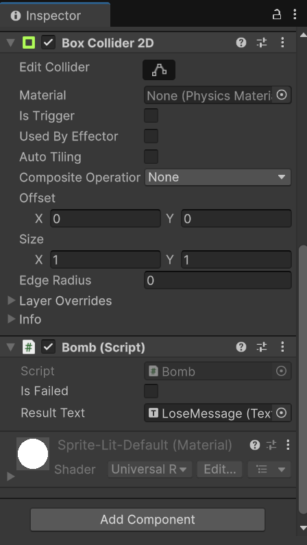
図のようになればOKです。
この作業をSceneビューに配置した全てのオブジェクトに行ってください。
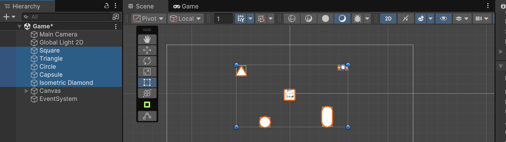
作業が終わったらオブジェクトの中から1つだけはずれを設定しましょう。はずれにしたい爆弾のisFailedにチェックを付けてください。
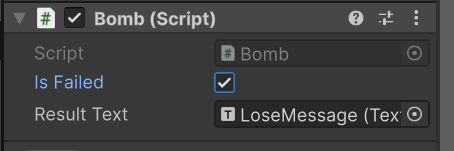
図のようになればOKです。
おめでとうございます！完成です！ゲームを実行してみましょう！
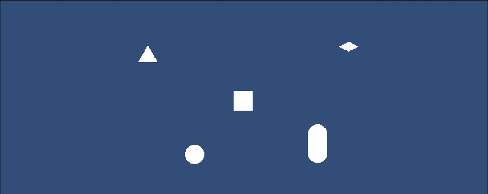
もし上手くいかなかったら先輩に遠慮なく聞いてください！
初めてプログラミングを読む人からしたら難しくて何言ってるか分からないと思いますが、プログラミング能力はプログラムを読んだだけ上がります。一度目を通すだけでもお願いします！
今からの解説を完全に理解する必要はありません。薄く、広く、ざっくり覚えながら「あっそ、ふーん」くらいの気分で見てくれたら大丈夫です。
さて、プログラミングを読むにはものすごい量の知識が必要だと思われがちですが、実はプログラミングを読めるようになる近道は読み方のコツを覚えることです。
例えば、プログラミングは括弧ごとで塊になっていて、プログラマーには塊で見えています。つまりさっきのコードで言うと、
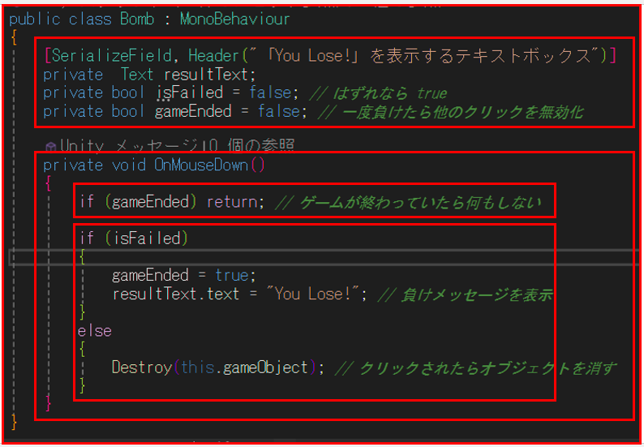
こう見えているわけです。これはプログラミングをスムーズに読むコツです。
また、こう書け！と決められている部分とコーディングした人が自由に決められる部分があります。
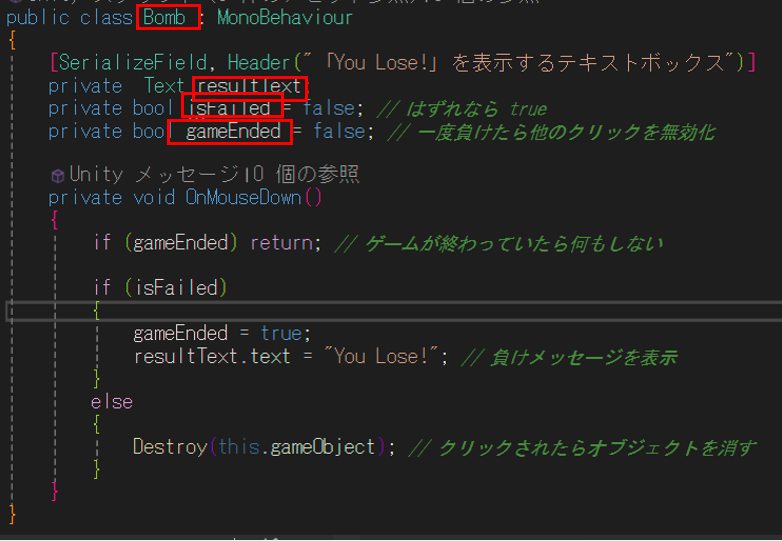
図の囲われている部分は命名できるので、自分が見て何をしているのか分かりやすく名前を付けるのもコツの1つと言えるでしょう。
この2つが出来たらプログラミングは半分読めたようなものです。ここからはコードを詳しく読んでみましょう。
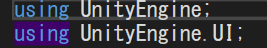
このusing～はライブラリと言って、Unityの機能をC#で使うときに必要なものです。最初はおまじないみたいなものだと思っといてください。
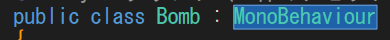
publicというのは「アクセス修飾子」といって、詳しくは上級で勉強することになるので、今回はclass(クラス)とは何かを覚えてください。
クラスとは簡単に言えば設計図です。先ほど「6.アタッチと実行」でBombクラスのスクリプトをいっぱいアタッチしたと思います。
それは、「クリックされたら消える、はずれならゲームオーバー」という設計図をもとにオブジェクトを作っていたんです。
つまり、みなさんが書いたこのスクリプトはBomb(爆弾)の設計図だったわけです。
このように、Unityのプログラミングでは設計図(クラス)をもとに色んな機能を持ったオブジェクトを作ることを繰り返していくのが基本的な考え方になります。
そして、「:MonoBehaviour」というのは、「このクラスはMonoBehaviourというクラスを継承しているという」のを表しているのですが、継承がかなり難しい概念で2年生が学ぶような内容なので、今はおまじないだと思ってもらって大丈夫です。応用編でちょっとだけ話すかも
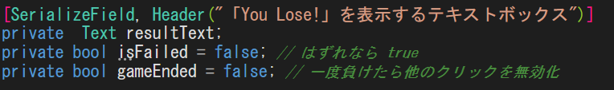
上図の部分ではクラスに必要な変数を定義しています。変数というのは設計図の中のパラメータを表す部分です。
例えば、マリオというクラスがあったとしたら、ジャンプの高さ、残り何機あるのか、今マリオは何マリオなのか、などの変数が考えられるでしょう。
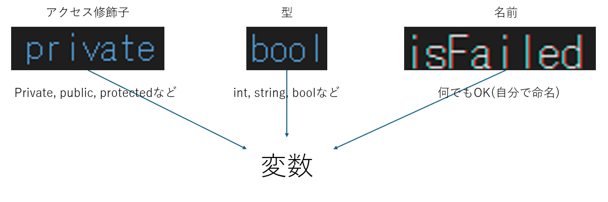
図のように3つの要素の組み合わせで変数を定義します。コードを見たら分かるように、一度定義したら2回目以降は名前だけで使います。
前述の通りアクセス修飾子は上級で解説するので、今回は型の例を見てみましょう:
| 型 | 説明 | 例 |
|---|---|---|
| int | 整数を使うときの型 | int rank = 10; |
| float | 小数を使うときの型 | float height = 170.5; |
| string | 文字列を使うときの型 | string name = "爆弾くん"; |
| bool | trueとfalseの2つしか設定できない、真偽値を使うときの型 | bool isDead = false; |
ここで挙げている型はほんの1部で型は数えきれないほど存在しています。
また、コードを見るとText resultText;だけ型の色が緑色になっていますね。これは「爆弾くん」が「Textオブジェクトくん」と仲良くなるのに必要なのです。例えば、学食でご飯を食べていて、初対面の人に突然「1口ちょうだい！」と言われてあげますか？よっぽど心が大きい人じゃない限りあげないと思います。それはTextオブジェクトくんも同じで、仲良くないと「You Lose!」と表示しろと要求されても表示したくないのです。
つまり、Text resultText;というのは爆弾くんからTextオブジェクトくんに向けた仲良くなろうアピールで、「6.アタッチと実行」でTextオブジェクトくんがアンサーを返して初めて仲良くなるのです。そしてSerializeFieldはTextオブジェクトくんがアンサーを返せるようにするための呪文です。
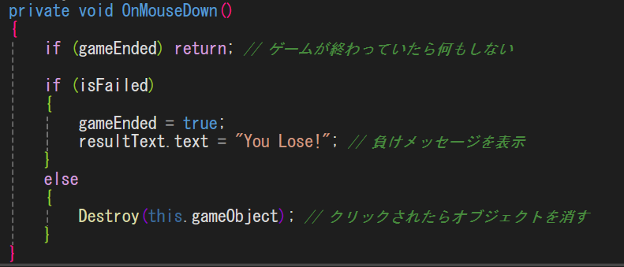
これは関数を定義しています。関数とは、クラスの機能や動作を定義するものです。
例えば、猫型ロボットというクラスがあったとしたら、「秘密道具を出す」、「どら焼きを食べる」、「押し入れで寝る」などの関数が考えられるでしょう。
関数は下図のような要素でできています。
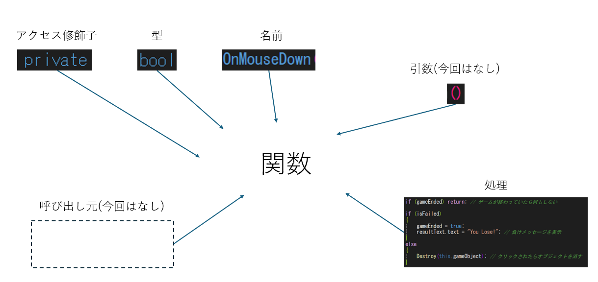
また、関数は変数と違って定義するだけでは力を発揮せず、その関数を呼び出す(実行する)ことでその中身の処理を行うことができます。
しかし、今回のOnMouseDown()関数はどこからも呼ばれていないのに、オブジェクトがクリックされた時に実行されます。なぜでしょう？
実は関数にはユーザー定義関数と、組み込み関数の2種類あります。
| 種類 | 説明 | 例 |
|---|---|---|
| ユーザー定義関数 | プログラマーが自分で作る関数。自分の好きな名前をつけられ、好きなタイミングで呼び出せる。(関数を呼びだす必要がある) | void Attack()、int GetScore() |
| 組み込み関数 | Unityなどプログラミング言語が最初から用意してくれている関数。決まった名前で、決まったタイミングで呼び出される。(関数を呼びだす必要がない) | OnMouseDown()、Start()、Update() |
つまりOnMouseDown()関数は組み込み関数であるため、呼び出さずともオブジェクトがクリックされた時に実行されるわけです。
関数の中身を見ると、「if」とたくさん書かれているのが分かります。これは、「if文」といって全てのプログラミング言語に存在する、最もよく使われている構文です。
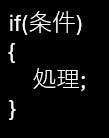
if文の構造は上図のようになっています。条件が満たされた時に中の処理を行うという意味です。
例：
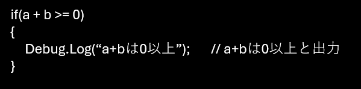
他にも機能があって、
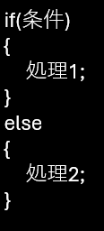
上図のように書かれているときは条件が満たされた時処理1, 条件が満たされなかったら処理2を行うという意味になります。
例:
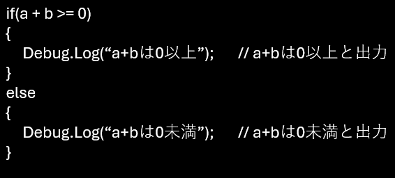
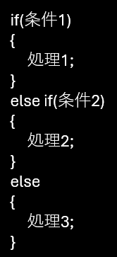
上図のように書かれているときは、条件1が満たされた時処理1, 条件1が満たされず、かつ条件2が満たされているときに処理2, 条件1も条件2も満たされなかったときは処理3を行うという意味になります。
else ifはいくらでも繋げられますが、大量に繋げたときのコードが読み辛すぎてプログラマーからは嫌われます。
例:
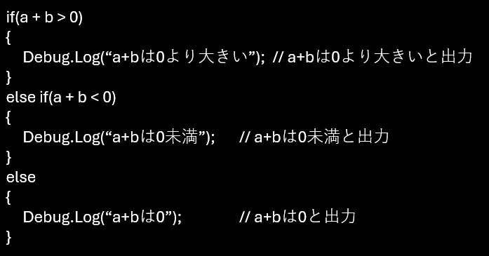
これを踏まえて今回のコードを見てください。
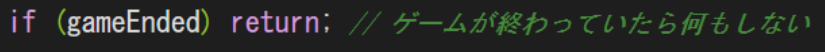
このようにif文は処理が1行の時は括弧を省略して書くことができます。
また、returnはここから下の処理はしませんよという意味です。
つまり、このif文はゲームオーバーしたときに残りの処理を飛ばすために使われています。
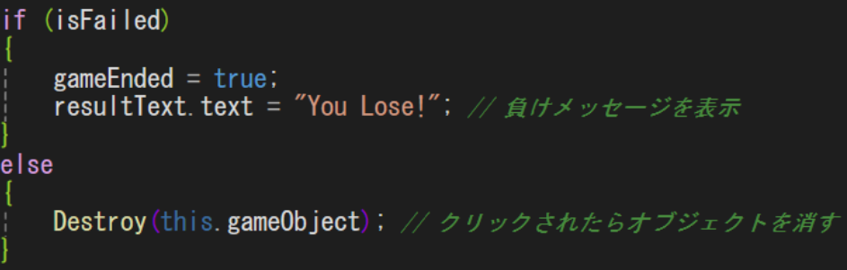
このif文は、はずれの爆弾ならゲームオーバーにして負けメッセージを表示、はずれの爆弾でなければ自分自身(this.gameObject)を消すという処理です。
つまりこれは、はずれの爆弾のisFailedをtrueにしていたわけですね。
以上でコードの解説は終わりです。
ここからはとうとうプログラマーデビューです。いくつか修正案を挙げておくので、それを参考にしながら自分なりにアレンジしてみてください。中級、上級を終えてからもう一度チャレンジしてみても良いかもしれません。
分からなかったら調べて、生成AI使って、先輩に聞いて解決しましょう。何度も調べて書いているうちに覚えてきます。
ちなみに筆者はかれこれプログラミングを初めてから8年くらい経ちますが、未だに覚えていないものだらけでずっと調べています。LEVEL1はずれの爆弾の数を増やそう
LEVEL2セーフの爆弾をクリックしたときは「セーフ」と表示しよう
LEVEL3スコアの追加
正直レベル3は現時点ではまあ難しいと思います。一旦LEVEL2までこなして、レベル3は飛ばしても大丈夫です。